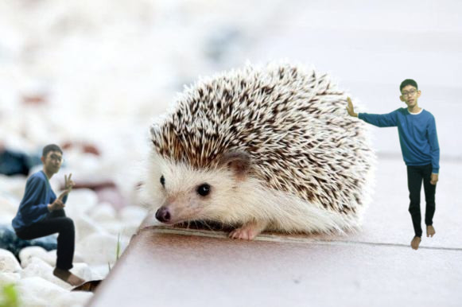

ABOUT ME
HOLA AMIGOS....
Nama saya Abda Nurhaqi. Saya lahir di Bogor, pada tanggal 29 Juli 2001. Saya adalah Anak pertama dari 3 bersaudara. Ayah Saya bekerja sebagai PNS dan Ibu saya bekerja di bidang perminyakan dan gas yaitu DAPUR alias Ibu rumah tangga.HEHEHE.. Saya punya banyak makanan favorit. Beberapa makanan favorit saya adalah Bulgogi , nasi padang dan banyak lagi yang penting enak dan halal. Kalo ada makanan favorit pasti ada minuman favorit lah ya, minuman favorit saya dari sekian banyak minuman didunia ini adalah Air mineral dan air kelapa hijau. Saya punya warna kesukaan. warna kesukaan saya adalah Baby blue , yellow lemon dan malasit hijau. Bunga kesukaan saya adalah bunga peony dan bunga lilac.
MY HOBBIES
Ini adalah beberapa hobi ku .
malu euy
(1) Main Gerobak Sodor

(1) Hobi aku yang petama kali itu Main gerobak sodor lawan anak anak komplek sebelah. waduh itu sih masih zaman masa kecil dulu. Hobi itu muncul saat kelas 5 SD pas lagi olahraga.Teman teman saya lagi main gobak sodor dan saya pun ikutan untuk pertama kalinya sehingga saya jadi merasa ketagihan main itu terus sampe udah malem pun masih main itu sama anak komplek sebelah dan itu ..... SERU BANGET !!!!
(2) Budidaya Landak Mini

(2) hobi saya yang kedua itu berternak landak mini RAKSASA sekalian dijual supaya dapet uang. Saya tertarik ke dunia bisnis budidaya hewan sejak saya berumur 13 tahun. Pada saat itu saya alhamdulillah berhasil berternak kelinci, meskipun uang yang didapat gak terlalu banyak. Terus saya kepikiran budidaya hewan mahal bakal dapt untung banyak kalo dijual. Dan saya mulai tertarik bisnis sekalian hobi yang bisa mendatangkan uang banyak. 1 bulan untungnya bisa 1 juta rupiah hehe...


WHERE I STUDY ?
I was love it !
Saat ini saya bersekolah di SMK-SMAK Bogor. Sekarang saya kelas XI. Pernah juga bersekolah di :
(1) TK : TK Al-Hidayah Abesin
(2) SD : SDN Pengadilan 2 Bogor
(3) SMP: SMPN 2 Bogor